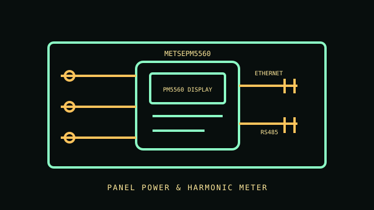

[ PANEL POWER METER // METSEPM5560 ]
Schneider Electric PowerLogic PM5560
Panel-mounted multifunction power meter with Ethernet and RS485 communications. This exact model monitors electrical parameters and harmonics; installation and measurement wiring are governed by the PM5560 documentation.

IDENTIFICATION: Manufacturer order code METSEPM5560. Confirm the current regional product revision and applicable installation sheet before mounting or wiring.
Specifications & compatibility
| Exact model / function | Schneider Electric PowerLogic PM5560, METSEPM5560; multifunction panel power and energy meter. |
|---|---|
| Measured metrics | Voltage, current, frequency, power, power factor and harmonics up to the 63rd harmonic as specified by the manufacturer. |
| Voltage / phase | 20–690 VAC phase-to-phase and 20–400 VAC phase-to-neutral; 45–65 Hz as listed for this product. |
| Current range / accuracy | Current measurement uses configured external CT inputs; use the manual for permitted secondary input. Schneider specifies Class 0.2S energy accuracy; this class is not a universal accuracy claim for all measured quantities. |
| Display / network / output | Backlit LCD; two Ethernet ports, RS485 and digital I/O. Protocol and output features depend on meter configuration and setup. |
| Form factor | Panel-mounted meter for a compatible electrical switchboard/control enclosure. |
| Host compatibility | Compatible Ethernet/Modbus or serial monitoring hosts as documented; no OS-specific application requirement is inherent to the meter. |
| Electrical safety | Use correct instrument transformers and wiring diagram. Do not infer a CAT rating absent from the cited exact product summary; install using the PM5560 guide, qualified personnel and applicable electrical code. |
Installation & archival notes
- Record the order code, wiring mode, CT ratio, communications configuration and firmware with exported data.
- Fit within a correctly rated panel and provide required upstream overcurrent protection.
- Never work on live switchboard wiring unless qualified and following the manufacturer instructions and applicable safety procedure.
Manufacturer sources
- Schneider Electric — PM5560 exact model pageOrder code, measurement, interface and accuracy specifications.
- Schneider Electric — PM5560/PM5650 instruction sheetProduct installation and wiring guidance.
- Schneider Electric — PM5500/PM5600/PM5700 user manualManufacturer configuration, measurement and safety reference.